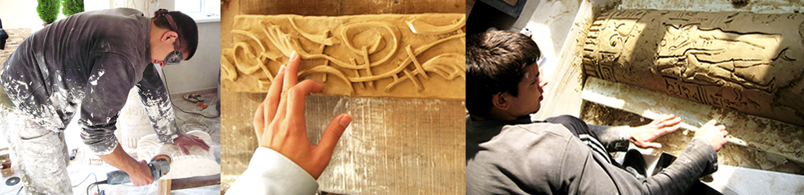
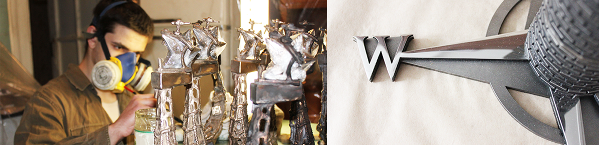

Вітаємо в нашій майстерні! Ми - творча родина Гетьман - Зоріна та Валентин. Ми залюбки малюємо як на стінах та стелях, так і на папері та шпалкерах)). Як олійними фарбами, так і акрилом, аквареллю, олівцями, та всім що під руку попадеться). Захоплюємося процесом створення скульптури та різних матеріалів від гіпсу до сталі та бронзи. Виготовлюємо скульптуру від ескізу до готової довершеної скульптури, нагороди, приза. Також дуже подобається нам мурзати руки гіпсом, створюючи гіпсову ліпнину, колони портали та інші оздолюючі елементи для ексклюзивних інтер'єрів, надаючи таким чином творчку родзинку вашій оселі чи офісу... Найчастіше в нашій майстерні ми нерозривно поєднуємо ліпнину з настінним розписом, надаючи... атмосферу.